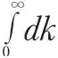
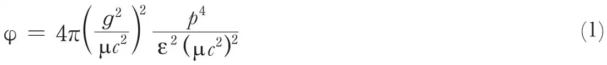
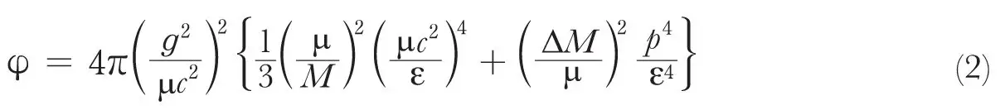
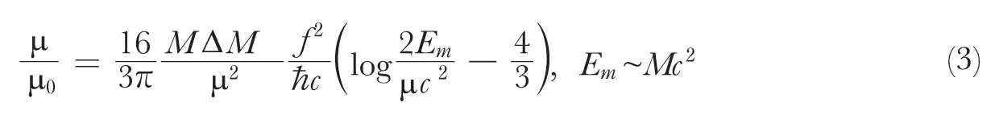

中文
中文W. Heitler
Editor’s Note
Walter Heinrich Heitler was a German scientist who had emigrated to Britain in the 1930s. The particles of matter called mesons had not been observed in practice but only their existence inferred; their role was supposed to mediate the forces between particles of nuclear matter, neutrons and protons for example. This highly technical note suggests that other properties of the nuclear particles such as their magnetic moment could be calculated from their functions as mediators of the nuclear force. 中文
THE meson theory in its present form exhibits a number of difficulties which are connected with the particular way in which the conservation of charge and the spin enter the interaction between mesons and the nuclear particles. The expression for the anomalous magnetic moment of the proton and neutron1, for example, diverges as

. The cross-section for the scattering of mesons by a nucleus is found to be very much larger than experiments permit and increases rapidly with increasing energy. This would be incompatible with the high penetrating power of cosmic ray mesons. The cross-section for scattering of a longitudinal meson (rest mass μ) with energy ε (momentump/c) is, according to the present theory, given by2
From the analogy of mesons with light quanta, one would expect a cross-section of the order (g2/Mc2)2, where M is the mass of the proton, and no increase with energy for ε>μc2. The experiments by J. G. Wilson3 have shown that the scattering cross-section even for an energy so low as a few times μc2 (108 ev.) is smaller than (1) by an order of magnitude and does not increase with energy. 中文
As can be seen from the computation of (1), both difficulties are due to the fact that the conservation of charge forbids a number of transitions which could occur if mesons were neutral particles2. A neutral meson could, for example, be emitted and absorbed by a proton. A positive meson can only be emitted by a proton but not absorbed. The cross-section for scattering would be of the right order of magnitude if we allow a positive meson also to be absorbed and a negative one to be emitted by a proton, etc., or, in other words, if “proton states” with charges –e and +2e existed4. The introduction of those particles meets, however, with the following difficulties. First, particles of this nature are not observed and are unlikely to have escaped observation if they occur in heavy nuclei. Secondly, if a proton were capable of emitting also a negative meson, the negative meson would give a contribution to the anomalous magnetic moment of the proton of opposite sign and—all other quantities being equal—of the same value as the contribution from the positive meson. Thus, there would be no anomalous magnetic moment at all. 中文
These difficulties can be overcome if we assume that the rest mass of the new particles is considerably higher than that of the proton, say, by 25–50 electron masses (see below). The particles would then be extremely unstable and would not play any part in the structure of heavy nuclei. Denoting the mass difference between the new particles and the proton by ΔM, the cross-section for the scattering of a longitudinal meson becomes, for ε < Mc2, assuming ΔM ≪ μ,

This expression does not increase with energy for ε>μc2. If p is approximately μc2, (2) is smaller by a factor (ΔM/μ)2 than (1). A value ΔM/μ of approximately 1/5 would be sufficient to bring (2) into harmony with the experimental requirements. For ε greater than Mc2, φ will probably decrease owing to the relativistic features of the proton. 中文
Similar considerations must be applied to the spin. The spin contributes also to the high scattering cross-section (for transverse mesons). This can be avoided if we introduce also “higher spin states”, for example, heavy particles with spin s of 3/2. Transitions from the normal proton state, s equal to 1/2, to these higher states under the influence of a meson field can be included in the theory in a very simple manner. In the present theory the spin-dependent interaction between a meson field φ and a nuclear particle is f/λ (σ curl φ), where σ is the spin matrix and has only matrix elements for Δ s = 0. σ has to be extended in such a way as to include transitions Δ s = 1. This can be done if we replace σ by the matrix of a dipole moment r/r. For transitions Δ s = 0, the matrix elements of r/r and of σ are identical. If this is done, the cross-section for the scattering of transverse mesons also is small and of the order of magnitude (2). The physical significance of r/r is that of the intrinsic magnetic dipole moment of the proton, which is a characteristic feature of the meson theory (r is not, of course, the spacial position of the proton). 中文
As a further result of our new assumptions, the anomalous magnetic moments diverge only logarithmically. Such a divergence can, at the present stage of the theory of the meson, scarcely be considered as a very serious difficulty. The relativistic features of the proton have so far been neglected, and it may well be that the logarithmic divergence would disappear if they are taken into account properly. As an upper limit for the validity of the meson theory in the form proposed above, we therefore take the rest energy of the proton. The anomalous magnetic moment of the proton then becomes (in units of the nuclear magneton μ0)

This is of the right order of magnitude when ΔM/μ is approximately 1/5, which is the value assumed above. 中文
(145, 29-30; 1940)
W. Heitler: H. H. Wills Physical Laboratory, University, Bristol, 8, Nov. 28.
References:
1. Fröhlich, Heitler and Kemmer, Proc. Roy. Soc., A, 166, 154 (1938). Yukawa, Sakata and Taketani, Proc. Math. Phys. Soc. Japan, 20, 319 (1938).
2. Heitler, Proc. Roy. Soc., A, 166, 529 (1938), and Report of the Eighth Solvay Conference, Brussels, in the press, where the reasons for the high cross-section are analysed.
3. Wilson, Proc. Roy. Soc., in the press. I am very much indebted to Dr. Wilson for having sent me his MS. before publication.
4. This possibility was first mentioned to me by Bhabha in a private discussion in connexion with his classical theory for neutral mesons. The whole problem was very much clarified in discussions with Bhabha, Fröhlich and Kemmer.